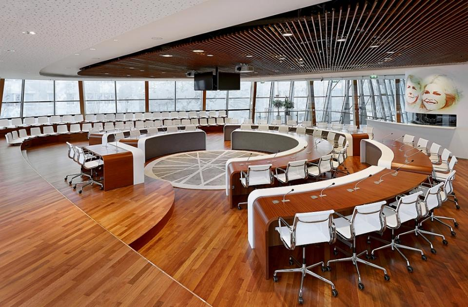

ScalaMUN 2019
Model United Nations Conference organised by students of the Scala College, Alphen aan den Rijn, The
Netherlands. The sixth edition will be held on Friday and Saturday the 8th and 9th or March, 2019!
This
year’s topic will be… Travel the World! We are all very excited to see you there!
Travel the World!
"...In a world which is becoming ever so intertwined, people can travel around the world in a split-second. These developments shine their light on new questions and ethical discussions: from the protection of human rights and increasing globalisation to the harrowing conditions on aeroplanes. Enough issues to discuss during the sixth edition of ScalaMUN: Are YOU Travel the World?"
Timetable ScalaMUN 2019
Friday 8th of March
| Time | What | Where | Who? |
|---|---|---|---|
| 10:30 | Start opening ceremony | Town Hall | All Committees, MUN Directors |
| 12:00 | End opening ceremony | Town Hall | All Committees, MUN Directors |
| 12:00-13:45 | Lunch & Lobbying | Town Hall | All Committees, MUN Directors |
| 14:00-18:00 | In Committee | Scala College See committee information | Security Council, Legal Committee, Economic and Social Council |
| 14:00-18:30 | In Committee | Scala College See committee information | Human Rights Council, Technology and Innovation Council, Alternate History Committee |
| 18:00-18:30 | Dinner | Scala College In main hall | Security Council, Legal Committee, Economic and Social Council |
| 18:30-19:00 | Dinner | Scala College In main hall | Human Rights Council, Technology and Innovation Council, Alternate History Committee |
| 18:30/19:00-20:00 | In committee | Scala College See committee information | All Committees |
| 21:00-0:00 | PARTY TIME!!! | Scala College | All Committees, MUN Directors |
Saturday 9th of March
| Time | What | Where | Who |
|---|---|---|---|
| 10:00 | Welcome in committee | Scala College See committee information | All Committees, MUN Directors |
| 10:30-12:30/13:00 | In committee | Scala College See committee information | All Committees |
| 12:30-13:00 | Lunch | Scala College In main hall | Security Council, Legal Committee, Economic and Social Council |
| 13:00-13:30 | Lunch | Scala College In main hall | Human Rights Council, Technology and Innovation Council, Alternate History Committee |
| 13:00/13:30-16:30 | In Committee | Scala College See committee information | All Committees |
| 16:30-17:15 | Lottery | Scala College In main hall | All Committees, MUN Directors |
| 17:15-18:00 | Closing Ceremony | Scala College In main hall | All Committees, MUN Directors |
*Times may change, keep the website in check for future updates